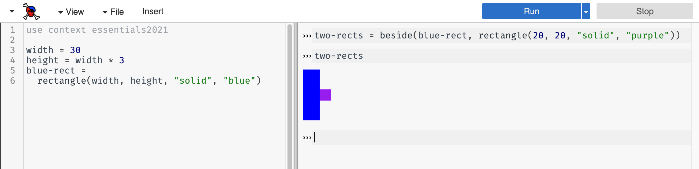

3.2 Naming Values
3.2.1 The Definitions Pane
So far, we have only used the interactions pane on the right half of the CPO screen. As we have seen, this pane acts like a calculator: you type an expression at the prompt and CPO produces the result of evaluating that expression.
The left pane is called the definitions pane. This is where you can put code that you want to save to a file. It has another use, too: it can help you organize your code as your expressions get larger.
3.2.2 Naming Values
The expressions that create images involve a bit of typing. It would be nice to have shorthands so we can “name” images and refer to them by their names. This is what the definitions pane is for: you can put expressions and programs in the definitions pane, then use the “Run” button in CPO to make the definitions available in the interactions pane.
Do Now!
Put the following in the definitions pane:
red-circ = circle(30, "solid", "red")Hit run, then enter
red-circin the interactions pane. You should see the red circle.
More generally, if you write code in the form:
NAME = EXPRESSIONPyret will associate the value of EXPRESSION with NAME. Anytime you
write the (shorthand) NAME, Pyret will automatically (behind the
scenes) replace it with the value of EXPRESSION. For example,
if you write x = 5 + 4 at the prompt, then write x, CPO will give
you the value 9 (not the original 5 + 4 expression).
What if you enter a name at the prompt that you haven’t associated with a value?
Do Now!
Try typing
puppyat the interactions pane prompt (›››). Are there any terms in the error message that are unfamiliar to you?
CPO (and indeed many programming tools) use the phrase “unbound identifier” when an expression contains a name that has not been associated with (or bound to) a value.
3.2.2.1 Names Versus Strings
At this point, we have seen words being used in two ways in programming: (1) as data within strings and (2) as names for values (also called identifiers). These are two very different uses, so it is worth reviewing them.
Syntactically (another way of saying “in terms of how we write it”), we distinguish strings and names by the presence of double quotation marks. Note the difference between
puppyand"puppy".Strings can contain spaces, but names cannot. For example,
"hot pink"is a valid piece of data, buthot pinkis not a single name. When you want to combine multiple words into a name (like we did above withred-circ), use a hyphen to separate the words while still having a single name (as a sequence of characters). Different programming languages allow different separators; for Pyret, we’ll use hyphens.Entering a word as a name versus as a string at the interactions prompt changes the computation that you are asking Pyret to perform. If you enter
puppy(the name, without double quotes), you are asking Pyret to lookup the value that you previously stored under that name. If you enter"puppy"(the string, with double quotes) you are simply writing down a piece of data (akin to typing a number like3): Pyret returns the value you entered as the result of the computation.If you enter a name that you have not previously associated with a value, Pyret will give you an “unbound identifier” error message. In contrast, since strings are just data, you won’t get an error for writing a previously-unused string (there are some special cases of strings, such as when you want to put a quotation mark inside them, but we’ll set that aside for now).
Novice programmers frequently confuse names and strings at first. For
now, remember that the names you associate with values using =
cannot contain quotation marks, while word- or text-based data must
be wrapped in double quotes.
3.2.2.2 Expressions versus Statements
Definitions and expressions are two useful aspects of programs, each with their own role. Definitions tell Pyret to associate names with values. Expressions tell Pyret to perform a computation and return the result.
Exercise
Enter each of the following at the interactions prompt:
5 + 8
x = 14 + 16
triangle(20, "solid", "purple")
blue-circ = circle(x, "solid", "blue")The first and third are expressions, while the second and fourth are definitions. What do you observe about the results of entering expressions versus the results of entering definitions?
Hopefully, you notice that Pyret doesn’t seem to return anything from the definitions, but it does display a value from the expressions. In programming, we distinguish expressions, which yield values, from statements, which don’t yield values but instead give some other kind of instruction to the language. So far, definitions are the only kinds of statements we’ve seen.
Exercise
Assuming you still have the
blue-circdefinition from above in your interactions pane, enterblue-circat the prompt (you can re-enter that definition if it is no longer there).Based on what Pyret does in response, is
blue-circan expression or a definition?
Since blue-circ yielded a result, we infer that a name by
itself is also an expression. This exercise highlights the difference
between making a definition and using a defined name. One produces a
value while the other does not. But surely something must
happen, somewhere, when you run a definition. Otherwise, how
could you use that name later?
3.2.3 The Program Directory
Programming tools do work behind the scenes as they run
programs. Given the program 2 + 3, for example, a calculation
takes place to produce 5, which in turn displays in the
interactions pane.
width = 30width and records that
width has value 30. If you then write
height = width * 3width * 3), then stores the resulting value (here, 90)
alongside height in the directory.width * 3)? Since width is a
word (not a string), Pyret looks up its value in the directory. Pyret
substitutes that value for the name in the expression, resulting in
30 * 3, which then evaluates to 90. After running
these two expressions, the directory looks like:
Directory
width→30height→90
height in the directory has the
result of width * 3, not the expression. This will
become important as we use named values to prevent us from doing the
same computation more than once.The program directory is an essential part of how programs evaluate. If you are trying to track how your program is working, it sometimes helps to track the directory contents on a sheet of paper (since you can’t view Pyret’s directory).
Exercise
Imagine that you have the following code in the definitions pane when you press the Run button:name = "Matthias" "name"What appears in the interactions pane? How does each of these lines interact with the program directory?
Do Now!
What happens if you enter a subsequent definition for the same name, such as
width = 50? How does Pyret respond? What if you then ask to see the value associated with this same name at the prompt? What does this tell you about the directory?
name = value notation. While
there is a notation that will let you reassign values, we won’t work
with this concept until Mutating Variables.3.2.3.1 Understanding the Run Button
Now that we’ve learned about the program directory, let’s discuss what happens when you press the Run button. Let’s assume the following contents are in the definitions pane:
width = 30
height = width * 3
blue-rect = rectangle(width, height, "solid", "blue")include statement, Pyret adds the definitions from the
included library to the directory. After processing all of the lines
for this program, the directory will look like:Directory
circle→ <the circle operation>rectangle→ <the rectangle operation>...
width→30height→90blue-rect→ <the actual rectangle image>
If you now type at the interactions prompt, any use of an identifier (a sequence of characters not enclosed in quotation marks) results in Pyret consulting the directory.
beside(blue-rect, rectangle(20, 20, "solid", "purple"))blue-rect.Do Now!
Is the purple rectangle in the directory? What about the image with the two rectangles?
Neither of these shapes is in the directory. Why? We didn’t ask Pyret to store them there with a name. What would be different if we instead wrote the following (at the interactions prompt)?
two-rects = beside(blue-rect, rectangle(20, 20, "solid", "purple"))two-rects. The purple rectangle by itself, however,
still would not be stored in the directory. We could, however,
reference the two-shape image by name, as shown below:
Do Now!
Imagine that we now hit the Run button again, then typed
two-rectsat the interactions prompt. How would Pyret respond and why?
3.2.4 Using Names to Streamline Building Images
The ability to name values can make it easier to build up complex expressions. Let’s put a rotated purple triangle inside a green square:
overlay(rotate(45, triangle(30, "solid", "purple")),
rectangle(60, 60, "solid", "green"))However, this can get quite difficult to read and understand. Instead, we can name the individual shapes before building the overall image:
purple-tri = triangle(30, "solid", "purple")
green-sqr = rectangle(60, 60, "solid", "green")
overlay(rotate(45, purple-tri),
green-sqr)In this version, the overlay expression is quicker to read
because we gave descriptive names to the initial shapes.
Go one step further: let’s add another purple-triangle on top of the existing image:
purple-tri = triangle(30, "solid", "purple")
green-sqr = rectangle(60, 60, "solid", "green")
above(purple-tri,
overlay(rotate(45, purple-tri),
green-sqr))Here, we see a new benefit to leveraging names: we can use
purple-tri twice in the same expression without having to write
out the longer triangle expression more than once.
Exercise
Assume that your definitions pane contained only this most recent code example (including the
purple-triandgreen-sqrdefinitions). How many separate images would appear in the interactions pane if you pressed Run? Do you see the purple triangle and green square on their own, or only combined? Why or why not?
Exercise
Re-write your expression of the Armenian flag (from Making a Flag), this time giving intermediate names to each of the stripes.
In practice, programmers don’t name every individual image or expression result when creating more complex expressions. They name ones that will get used more than once, or ones that have particular significance for understanding their program. We’ll have more to say about naming as our programs get more complicated.